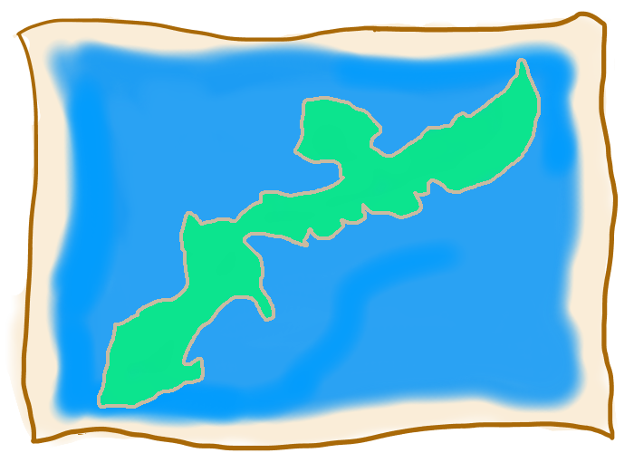

<div class="modal_kabotya map">
	<div class="modal_kabotya_contents">
		
	</div>

	<div class="modal_kabotya_menu">
		<button class="close mdl-button mdl-js-button mdl-button--raised mdl-button--accent">閉じる</button>
	</div>
</div>